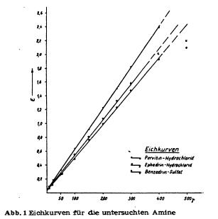
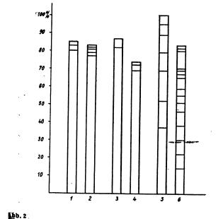

|
Steam volatility of methamphetamine, amphetamine and ephedrineby hypo(format & minor edits by metanoid) [ Back to the Chemistry Archive ]
Steam volatility of methamphetamine, amphetamine and
ephedrine This article was dug up for you by lugh. (thanks!) It compares the steam volatility of pervitine, benzedrine and ephedrine. this might be very interesting for those steaming their reaction mixture. I read the key sentence for the ADD/ADHDers amongst us ;) but this might also be of interesting for those trying to steam ephedrine out of plant material. check it out...
For the isolation of amphetamines and related compounds, as well in small as in big scale, besides extraction, steam distillation from basic solution is used since long, because those compounds are usually volatile with steam. Also in recent time, this method of isolation of amphetamines from biological material, resp. purification of obtained reaction mixtures, was recommended for example by Griebel, Vidic and Scheibe. D. Richter on the other hand believes to be able to isolate amphetamines without steam distillation, whereas Mc. Nally emphatically recommends the use thereof. With this method it is possible to separate amphetamines from alkaloids and biogenic amines (especially decomposition products of proteins), as long as those are not volatile. However according to our experiences, presence of adrenaline derivates in the biological material can make troubles during the detection of amphetamines in the steam distillate. According to Vidic these troubles can be circumvented by using his method of detection with platinum chloride reagent. He explicitly mentioned that using his method, no interferences by adrenaline derivates or biogenic amines are to be expected. Because of these unclarities, it seemed advisable to verify the steam volatility of pervitine, benzedrine and similar compounds in a number of experiments. To achieve this goal, it was necessary to characterise the behaviour of the amphetamines benzedrine and pervitine in steam distillation. At the same time it should be clarified if a quantitative isolation of those amphetamines from aqueous medium is possible. As comparison substance only ephedrine was used. According to the available literature (Graf), the amphetamine bases should be separable from the ephedrine base. But unpublished experiments (Scheibe) showed that a certain amount of this base is found in the distillate, when steam distilling from basic solution. That's why pervitine hydrochloride, benzedrine sulfate and ephedrine hydrochloride were steam distilled from basic solution and the distillate collected in sulfuric acid in multiple fractions. Thus it was possible to get an idea of the course of the steam distillation. We will describe the details of this method below. The preparation of the solutions was the same for all the compounds, namely pervitine hydrochloride, benzedrine sulfate and ephedrine hydrochloride. All solutions were made up with distilled water, the measurement thereof was performed in officially calibrated graduated flasks, resp. pippetes. All glassware was thoroughly washed and degreased. The substance to be analysed was dried for 24h in an evacuated dissicator. Then exactly 25 mg were weighed on a microscale, dissolved in a little water, transfered into a 100 ml graduated flask and the flask filled up exactly to the 100 ml mark. Series of different concentrations were then prepared from this stock solution containing in each case 5, 10, 20, 50, 100, 200, 250, 300 and 400 ug substance in 2 ml. The individual solutions and the stock solution were kept at +4�C in the fridge if they couldn't be used right away. However it is not advisable to use the solutions for more than 10 days, because after this time the concentration on substance starts to decline drastically. 2 ml of an exactly adjusted solution were then made basic in a separatory funnel with 2 drops 30% sodium hydroxide solution and extracted two times with 2 ml pure chloroform. The extracts were transferred into a little measuring flask with a 5 ml mark. Then the solution was extracted a third time with 2 ml chloroform, but only so much of the chloroform was transferred into the measuring flask so that the volume of the extract was exactly 5 ml. The contents of the measuring flask were filtered through filterpaper (moistened with chloroform) into a test tube and treated with 3 drops 2% picric acid in chloroform. Pervitine- (Benzedrine-, Ephedrine-) picrate was thus obtained, giving the solution a more or less intense yellow colour, depending on the concentration. The extinction of those solutions was measured with a Pulfrich-photometer using 1 cm layer thickness against pure chloroform with a S42 filter. The extinctions, each determined by 6 readings, were plotted against a coordinate system, using the usual method. In order to determine the blank value, 2 ml aqua dest were recorded. The thus obtained extinction coefficient was never higher than 0.03 (0.02 - 0.04). The calibration curves were linear for all substances below an absolute amount of 300 ug of pure substance, whereas at higher amounts, the increase of the extinction was not proportional to the increase of concentration anymore (see curves). The effect of time on the extinction (after addition of picric acid) was also determined by repeated measurement. Here it appeared (as opposing to statements by D. Richter) that about 5 minutes after the addition of picric acid the extinction does not change for the next 24 h.  The steam distillation was performed using the common Parnas-Wagner (Schott & Gen., Jena) apparatus for nitrogen determination. 2 ml of the to be analysed solution and then 2 ml 30% sodium hydroxide were introduced into the distillation flask. Three times about 2 ml water were used to wash the last bit of substance into the flask. For every solution five graduated separatory funnels where filled with 10 ml 4N sulfuric acid; for ephedrine up to 15 separatory funnels were necessary per sample. The steam flask was heated with a triple bunsen burner. The lower end of the condenser was slightly immersed into the sulfuric acid in the separatory funnel. The distillation was executed until 10 ml of distillate were collected, then the receiver was quickly changed until no more base could be detected. When changing the receiver care was taken not to lose a single drop. The content of every separatory funnel was then treated with 30% sodium hydroxide until clearly basic. Then the solution was extracted, filtered and measured like described above. When steam distilling between 5 and 500 ug pervitine, the bulk of the base could already be found in the first fraction. In the case of ephedrine on the other hand, the base came considerably slower. The steam distillation had to be extremely forced in this case. The bulk of the base (especially when using bigger amounts) was nearly evenly distributed in the first 10 fractions. Even when using solutions of low concentration, the base could be detected more or less noticeably in the 6th up to the 10th fraction. The amount of base in the first 5 fractions was considerably lower than in the case of pervitine or benzedrine. Benzedrine seems to behave like pervitine in steam distillations, but the former seems to be more volatile with steam (see pic. 2). Pic 2. Percental distribution of the recovered amines in the different fractions of the steam distillation. - The lowest section gives the amount in the first fraction, the second from bottom the amount in the second fraction and so on.
1 = 100 ug Pervitine HCl On the basis of the performed experiments, one notes that pervitine and benzedrine are very volatile with steam and are to be expected in the first fractions. This is in accordance with relevant publications. Amphetamines can easily be separated from less volatile bases by steam distillation. If it was to be desired that already the first fraction contains an as big as possible amount of ephedrine, then the used steam had to be very powerful and the distillation had to be assisted by direct heating of the distillation flask. While the qualitative detection of ephedrine gave only a very weak positive result when slowly distilling, using a strong stream gave considerably more base. Even though not always 100% of the bases could be recovered in the experiments, no bases could be detected in the distillation flask. This can possibly be attributed to the destruction of the amines after longer heating in strongly alkaline solution - see for example Griebel (manual entry)! - Strangely, Vidic found with his microbeaker experiments that the main part of the pervitine base was to be found in the second fraction (in the second condensation). Our experiments clearly show that Vidic's results are only valid for the microbeaker method (this is also true for the Griebel method) and must not be generalised. A separation of ephedrine from the amphetamines seems possible if a steam distillation as mild as possible is used to isolate the amphetamines. Then a forced steam distillation can be used to separately collect the ephedrine. For the analysis of biological material, it rests to find out if the steam distillation is better done before or after the extraction of the main groups of pharmaceuticals etc. As is generally known, distillation from alkaline medium sets free an abundance of biogenic amines through basic reaction, which can appear in the distillate and interfere with the analysis of the amphetamines. Of course the results of the measurements are the more doubtable, the more of those interfering substances etc. are in the distillate. Especially with thoroughly dried ether and chloroform extracts this seems not to be that much of a problem as with untreated material, so it seem purposeful to perform the steam distillation only after extraction with organic solvents. Summary In order to obtain exact fundamentals for the isolation of amphetamines, the steam volatility thereof was examined. The following results were obtained:
1. Pervitine and benzedrine are fairly volatile. References Graf, E, Pharmzie Bd. 5, S. 108/11 (1950)Griebel, C., Dtsch. Apotheker-Z. Bd. 59, S. 328/30 (1944) --ref-Chem. Zbl, 1945 II, S. 1635 Ders., Hdb, d. Lebensmittelchemie, Herausg. v. A. Boemeru, a., Bd, IX, S, 258, Berlin 1942 H�nemohr, Rudalf, Inaug. Diss. Berlin (Humboldt-Univ. 1953) McNally, Wiliam D., W. L. Bergman und J. F. Polli, Labor. clin. Med. Bd. 32, S. 913/17 -- ref chem. Zbl. (Weinheim) 1949 I, S. 376 Richter, Derek, Biochem. J. Bd. 32, S. 1763 (1938) Scheibe, Ernst, Psychiatrie, Neurologie, mediz. Psychiologie Bd. 4, S. 26 (1952) Vidic, Ernst, Dtsch. Z. gerichtl. Med. Bd. 41, S, 251/52 (1952) Ders., Klin. Wschr, Bd. 30, S. 223 (1952) Anschr. d Verf.: Berlin NW 7 Hannoversche Str. 6
Notes) |